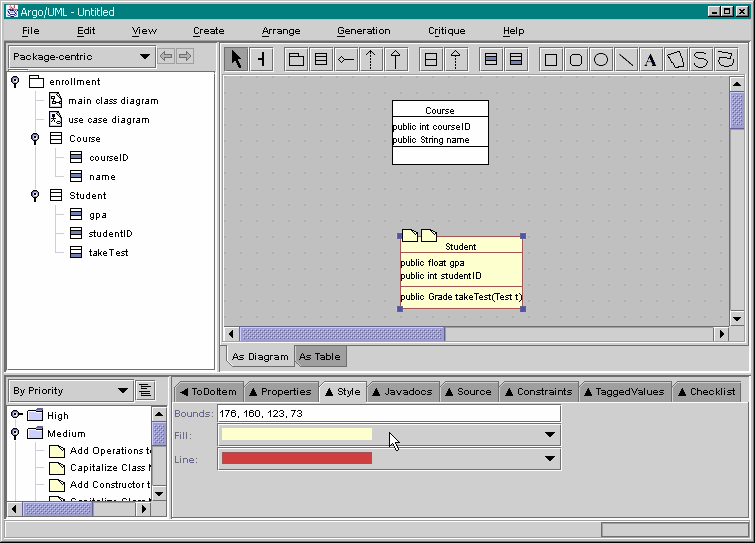

Previous step | Back to ArgoUML Tours | Next step
The only thing done differently for the Student class as opposed to
the Course class is that "New Operation"
was used.
Again, to edit the text of the operation,
just double-click on the bottom portion of the Student class.
Now change the color of the Student class, using the Style tab located in the
Details pane (bottom-right).
Change the fill color to light-yellow and the border to red.
All this leads to the situation as shown in the figure below.
Now, we are able to add the associations between
the Course and Student classes.

Back to ArgoUML Tours
Back to ArgoUML Home